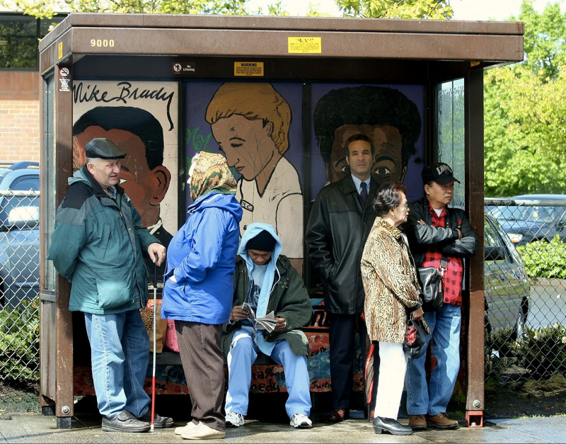

In a previous reading, I mentioned a mystical abductive process called "creativity". But I didn't explain where it comes from, how it works, or how you "do" it. Is this something that you can learn to do, or is it something you're born with?
We don't understand creativity fully, but researchers are actively trying to understand it. Here's my take: I believe creative thinking is an inherently divergent, generative activity that all humans can do. However, most societies do not value this type of thing and so our skills in generating ideas rapidly atrophies, as we do not practice it, and instead actively learn to suppress it. That time you said something weird and your mother called you weird? You learned to stop being creative. That time you painted something in elementary school and your classmate called it ugly? You learned to stop taking risks. That time you offered an idea in a class project and everyone ignored it? You must not be creative. Add up all of these little moments, and where most people end up in life is possessing a strong disbelief in their ability to generate ideas.
Here's another take on this same basic idea by David Kelly, who founded IDEO, a famous modern design firm:
His point? Half of being creative is believing you can, because the ability is already in you.
Here's another reflection, this one by Ira Glass of This American Life:
And here's yet another talk expressing the same idea, this time on how the design of our current educational systems suppress creative confidence:
Now, creative confidence is not all you need to be creative. Kelly would argue that you also need process. Glass argues that you also need taste. Wisdom from many creators have found many strategies that might be called process that can power your inherently generative human mind. Let's discuss a few of these.
Let's start with what not to do. Don't talk to users and ask them what they want. They're not designers, they're not predisposed to generating ideas. They're bound to tell you that they want a better version of what they already have. A famous (but fabricated) quote (not) by Henry Ford goes: "If I had asked my customers what they wanted, they would have said a faster horse." Accept that your job is to learn about people's lives, not to have them do your job for you.
The first place to start being creative is stealing. Why would you spend a bunch of time generating good ideas when there are so many good ideas already out there? Find those good ideas, combine them into something new, and you'll have something even better. These good ideas can come from anywhere: look to products on the market, products that are no longer on the market, the solutions that people are already using to solve a problem. One of the least studied repositories of great ideas is in libraries, which store ALL RECORDED HUMAN KNOWLEDGE. Want to design a better input device for mobile computing? Researchers have spent the last 60 years investigating thousands of them, and they've carefully described how to make each and every one of them, detailing how well they worked. You could take any of these, start a company based on them, and never have to invent anything.
So you've done your market research, your literature search, your user research, and every solution you've found is still inadequate. You want to invent something better. The next strategy is called quality through quantity. Linus Pauling, a Nobel Prize winning chemist, once said:
"The best way to have a good idea is to have a lot of ideas."
Your best idea will probably be your 100th idea and not your first, because it will incorporate all of the wonderful things about the first 99 ideas. So start generating those bad ideas, figuring out what's wrong with them, and then making better ones.
How do you figure out what's wrong with those bad ideas? Externalize often. The more you express those ideas—in words, in sketches, in prototypes, in demos—the more visible those flaws will be to you and other people. There's a reason that Leonardo da Vinci kept a notebook in which he sketched and wrote every idea he had: it allowed him to see those ideas, share those ideas, critique those ideas, and improve those ideas. Had he kept them all in his head, his limited capacity to see and reason about those ideas would have greatly limited his productivity.
I still haven't said where you get ideas. In my experience, ideas come from surrounding yourself with rich context. To illustrate, let's try a little experiment. Let's think about the problem of how to get people in Seattle to work more quickly. Have any ideas?
It's hard to generate anything in a vacuum with no stimulation, right? Now let's try generating some ideas after looking at some context:

Can you think of any ideas now? Now you're thinking of traffic, of waiting for a bus, of what it even means to get to work, and what work is. Now you're not only thinking of ideas grounded in the context above, but you're reconsidering the problem itself. Surround yourself with the complexity of the world and you'll have no problem generating ideas.
Other strategies are more analytical. For example, if you want to think of something new, question assumptions. Einstein asked whether time is really uniform and absolute in space. That's a pretty disruptive idea. Even questioning smaller assumptions can have big design implications. Consider several of the assumptions that recent software companies questioned:
These are not big, challenging questions to ask, they're just big, challenge questions to answer.
Another analytical route to generating ideas is analogical reasoning, which Plato and Aristotle called "shared abstractions." The basic idea is to take something concrete (like a horse), generalize it to something more abstract (a grass-powered human vessel), then modify the abstraction (a gas-powered human vessel), then finally make something more concrete (car). See? We just invented cars with analogy. Here's another example: what is a teacher? If we really abstract away the details of what teachers do, they're entities that shape the future thoughts and behaviors of people, by consent. If we take that abstract idea of what teachers do and try to make it concrete in a different way, what can we come up with? Intelligent tutoring software that shapes people's behavior. Maybe advertisements are teachers because they also try to shape behavior, but not by consent. What if there were advertisements that did teach by consent? See how this abstract idea of what a teacher is starts to generate new conceptions of how to shape behavior? The creative strategy here is finding the essence of something, and then manifesting that essence into something new.
All of these strategies require some faith. You have to believe that you can generate things, you have to trust that surrounding yourself with the rich detail of the world that you will notice things, and you have to trust that by noticing many things, you'll generate many ideas. Yes, some people may be better at these skills than others, but as I have said in previous readings, I suspect that's because they've practiced it more. So start practicing.
Csikszentmihalyi, M. (2014). Society, culture, and person: A systems view of creativity (pp. 47-61). Springer Netherlands.
Dorst, K. and Cross, N. (2001). Creativity in the design process: co-evolution of problem-solution. Design studies, 22(5), 425-437.
Earls, B. E. (2017). 11 brutal truths about creativity that no one wants to talk about. Creativity.
Farooq, U. (2006). Eureka! past, present, and future of creativity research in HCI. Crossroads, 12(3), 8-8.
Jacobs, A. J. (2014). How to Be More Creative. Real Simple.